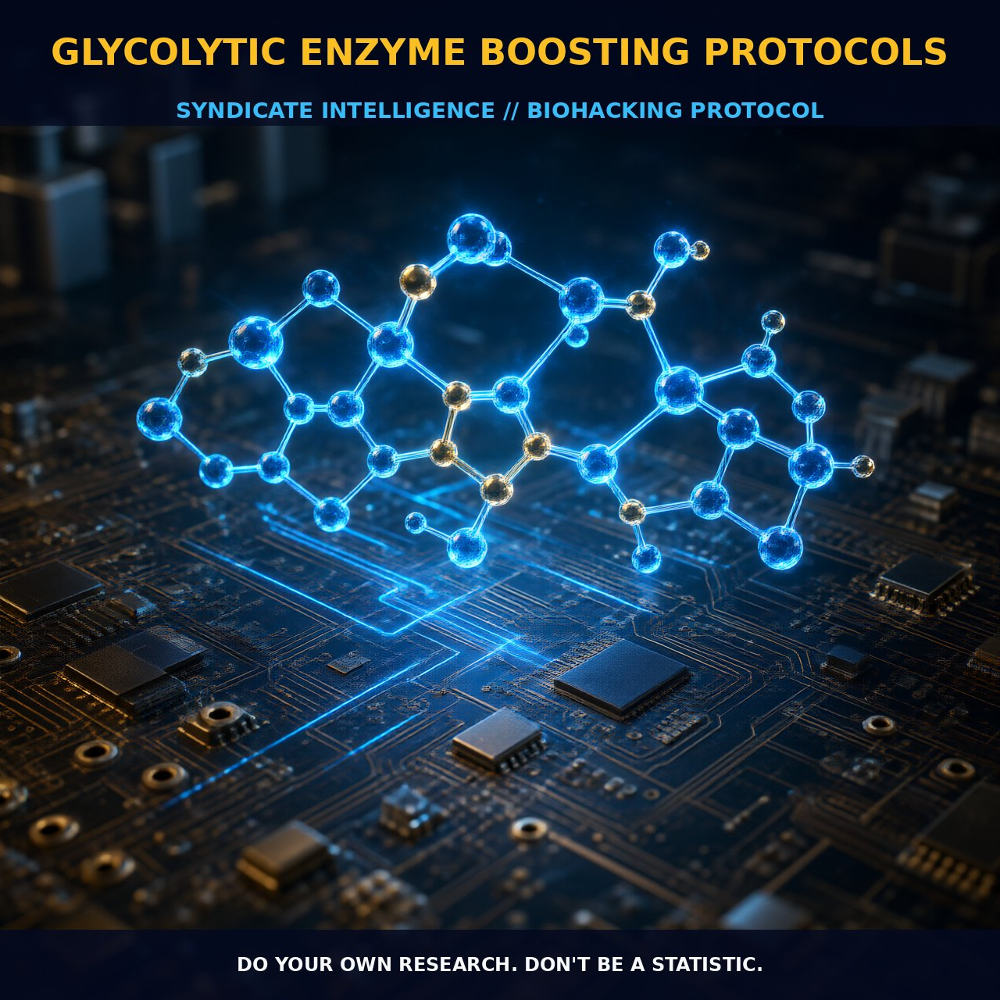

Enhancing Glycolytic Enzyme Activity for Improved Energy Metabolism

1. The Mechanism
Glycolysis is a fundamental metabolic pathway that breaks down glucose into pyruvate or lactate, providing the energy necessary for cellular processes. This pathway is not only crucial for energy production but also plays a pivotal role in regulating the secretion of insulin. During glycolysis, glucose is broken down into glucose-6-phosphate by the enzyme glucokinase, a key step that is strongly linked to blood glucose levels. The activity of glucokinase is critical as it serves as the main blood sugar level sensor, significantly increasing in secretion when blood glucose levels rise. This enzymatic activity is essential for maintaining blood glucose homeostasis by facilitating the rapid uptake of glucose into cells, particularly in the liver and skeletal muscles.
The breakdown of glycogen, a storage form of glucose, into glucose-6-phosphate is another critical step. Glycogen phosphorylase is the primary enzyme involved in this process, cleaving glycogen to release glucose-1-phosphate, which is then converted to glucose-6-phosphate. This glucose-6-phosphate can be utilized for energy production, either via glycolysis or via the pentose phosphate pathway, which generates ribose and NADPH for various metabolic processes. The pentose phosphate pathway is particularly important in tissues such as the adrenal gland, red blood cells, and liver fat cells, where these metabolites are essential for cellular functions and antioxidant defense.
2. Biological Leverage
Enhancing the activity of glycolytic enzymes can provide significant metabolic benefits. By boosting the activity of enzymes such as glucokinase and glycogen phosphorylase, one can optimize the conversion of glucose to energy and enhance insulin sensitivity. Increased glucokinase activity ensures a rapid breakdown of glucose, facilitating better glucose uptake into cells, which can help regulate blood sugar levels more efficiently. This can be particularly beneficial for individuals with metabolic disorders or those looking to improve their glucose metabolism.
Moreover, enhancing the activity of glycolytic enzymes can support energy production during high-intensity exercise. During anaerobic conditions, the rapid breakdown of glucose into pyruvate or lactate can provide the necessary ATP for muscle contraction. This can lead to improved endurance and performance, as muscles can utilize the stored glycogen reserves more effectively. The activation of the pentose phosphate pathway can also enhance the production of ribose and NADPH, which are critical for maintaining cellular health and oxidative defense.
3. Tactical Implementation
To boost glycolytic enzyme activity, several compounds and protocols can be employed. Resveratrol, a polyphenol found in red wine and grapes, has been shown to inhibit phosphodiesterase 4 (PDE4), an enzyme that degrades cyclic AMP (cAMP). By inhibiting PDE4, cAMP levels are elevated, which can activate protein kinase A (PKA) and subsequently enhance the activity of cAMP response element-binding protein (CREB). CREB activation is known to support the activity of glycolytic enzymes, thereby optimizing glucose metabolism.
Forskolin, a compound derived from the Coleus forskohlii plant, can directly increase cAMP levels, further enhancing the activation of PKA and CREB. Artichoke extract and oat straw are other supplements that can inhibit PDE4, thereby prolonging the duration of cAMP’s activation of PKA. Combining these compounds with PQQ (pyrroloquinoline quinone) and pterostilbene can provide additional support for CREB activation, thereby boosting glycolytic enzyme activity.
Dosages for these compounds should be carefully considered. Resveratrol is generally recommended at low-to-moderate amounts, typically 250 to 500 mg per day. Forskolin is usually dosed at around 100 to 250 mg per day. Artichoke extract and oat straw should be used in similar ranges, with doses typically around 300 to 600 mg per day. These supplements can be stacked to provide a synergistic effect on glycolytic enzyme activity and cAMP signaling.
Timing is also crucial. Taking these supplements in the morning or during exercise can maximize their effects on energy metabolism and insulin sensitivity. Combining these protocols with a diet rich in complex carbohydrates and low in simple sugars can further enhance glucose metabolism, ensuring that the body has a steady supply of glucose for energy production.
Prostar Life Hack
Stack Resveratrol, Forskolin, Artichoke Extract, and Oat Straw in the morning or before exercise to maximize the activation of glycolytic enzymes, enhancing energy production and insulin sensitivity.
[ AUTHOR: LEAD TECHNICAL RESEARCHER ]